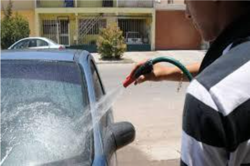

El agua es seguramente el recurso más fundamental del ser humano ya que sin este no podría sobrevivir, por ello se han llevado a cabo fases para su uso de manera sustentable y con ello la creación de esta pagína.
La página abordará la importancia y el interés sobre el agua dentro de la comunidad de la Alcaldía Iztapalapa, al igual que su concientizació respecto al uso del agua de manera sustentable y que desafíos conlleva esto.